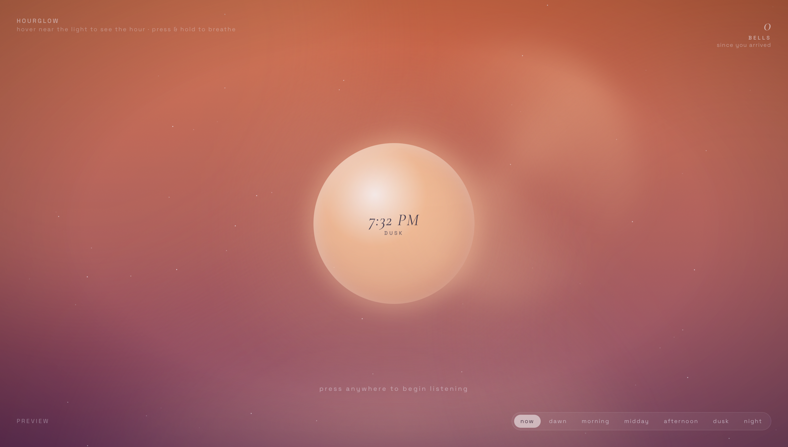
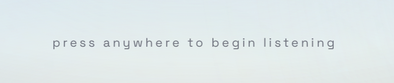
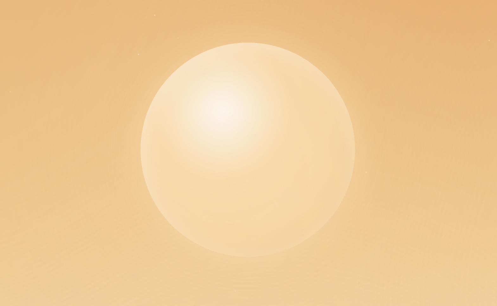
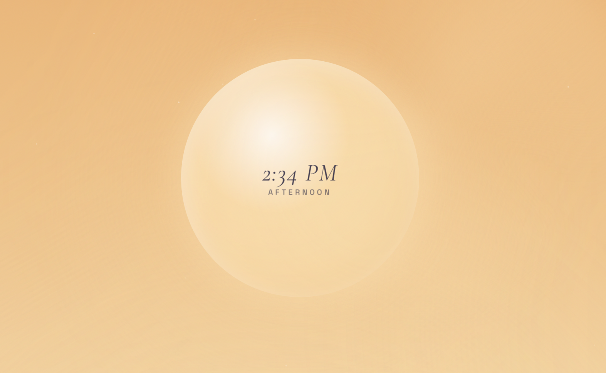

Medium
Under 840px
The orb is larger relative to the screen (44vmin). The preview label hides, preview links centre along the bottom, and the caption becomes smaller.
Hourglow is a calm interactive clock, it shifts with the real time of day and as you listen the rings of the bowl softly marks each passing moment.
Hourglow is a browser-based ambient instrument with no start or stop button. Its chord, sky colour and glowing orb shifts with the real-world time of day using the extended technique: Date/Time Temporal JavaScript Object. As listening begins, a soft hum plays that rings on its own to mark time passing, slowly at night and more often during the day. A counter keeps track of how many have rung since the user arrived.
Users interact across two timescales: a quick tap and a press and hold. The clock stays almost invisible unless users reaches for it so the focus mainly stays on the sounds and colours of the day rather than the numbers.
Design a way for users to relate to time using audio. This relation does not have to be quantitative measurement.
Clocks of various types are usually the instrument most strongly related to measuring regular intervals of time such as seconds, minutes and hours. Audio may instead be used to measure different intervals or otherwise change a user's experience of time, such as breaths in a period or meditation, or hold music while waiting on the phone.
Hourglow is designed to be understood with minimal instructions, each interaction is subtle and quiet. My instrument allows users to understand how a timer can mark the passing of time without demanding attention.

What it is: When users first open the page, the background sky and the glowing orb match the real time of day. It cycles between 6 different moods: dawn, morning, midday, afternoon, dusk and night. All of them reflect on the real time of day.
How it works: This works as JavaScript reads the current hour and sorts it into one of the six times of day with a simple getTimeOfDay() function. That time of day then picks a set of three sky colours, an orb colour and a chord. The colours are passed to CSS as custom properties so the entire look changes from one place.
Why: I chose to design it this way to create a different way to tell time, with sound and light. Letting colour carry the time of day means users get a sense of time before they read a single number. It also keeps the experience calm as there is nothing to move or flash to tell them something.

What it is: A softly pulsing line or text that invites users to press anywhere for the instrument to start. Their first press starts the sound and the hint fades away.
How it works: Browsers tend to not allow websites to play around until the user interacts with the page, hence the first pointerdown event creates the AudioContext, starting the hum and scheduling the first bell 1.5 seconds later.
Why: Instead of hiding this rule behind a play button, I turned it into a gentle invitation. My design was meant to not have a start or stop button so the first touch feels like stepping into a room rather than switching on a machine.
What is it: After interaction, it rings on its own every few seconds depending on the time of day. It rings slowly at night around 12 seconds per bell and more often during the day. Each ring sends a faint ripple out from the orb and every counter in the top right shows how many bells have rung since the user has arrived.
How it works: An autoBell() function rings the bowl then uses setTimeout to call itself again after the gap for that time of day. Each ring also:
.ripple element that expands and fades over 7 secondsWhy: I would say this is the heart of Hourglow as a sonic timer. Each bell is marker of a moment spent like a meditation bell. The counter turns those moments into gentle measure of duration instead of a ticking clock.
To make it learnable, I sent out my peer user testing form which showed that a number on its own was a little empty and confusing so the bells are explained in three layers. Each quieter than the last:
A permanent label: 'BELLS' since you arrived.
A one time caption at the first bell and it fades after 7 seconds and never returns until opened again.
A frosted card on demand, hovering over, tapping or tabbing to the counter opens "What are the bells?" with a full explanation.
What is it: The exact time is hidden, hovering over the orb with the mouse or tapping it slowly fades the text in over 1.4 seconds.


How it works: mouseenter and mouseleave events on the orb add and remove a .show class and css fades the text in over 1.4 seconds.
Why: The clock is almost invisible on purpose. Users have to reach for the time, which keeps their focus on the sound and the colour and gives them control over when they want precision.
What is it: The links at the bottom show Hourglow at other times of the day.
How it works: Each link adds ?hour= to the address. URLSearchParams reads this value and uses it instead of the real hour.
Why: Without this, someone visiting 3pm could never see the night sky. It was essential for peer testing and lets anyone explore the full day in a minute.
Every sound in Hourglow was generated live in the browser with the Web Audio API. There is no external audio files used and was built from 3 parts.
Four sine wave oscillators play the notes of the current chord. Each time of the day has its own chord, for example: a slightly muffled G major 7 at night and a clear C major 7 in the morning. All four notes are connected to one shared GainNode, which acts as a volume knob. When listening begins, the volume fades in from 0 to 0.035 over 5 seconds with linearRampToValueAtTime, so the sound arrives gently instead of switching on.
It responds to the day. The sound is generated rather than recorded, the chord and bell speed can change with the time of day without needing dozens of audio files.
Precise timing. Volume changes are scheduled on the audio clock, which is far more accurate than animating volume with JavaScript timers. This allows the fades to be more smooth.
Calm design. I chose sine waves because they're the softest waveform. Earlier prototypes used harsher waves (sawtooth) and I thought it was a little jarring and scary. Moving to sine waves and higher made the instrument feel reflective rather than tense.
Six palettes, one per time of day. Each has three sky colours (top, middle and bottom) and a matching orb colour: moonlight at night, peach at dawn, cream in the morning, warm shite at midday and a little honey yellow-orange in the afternoon and apricot at dusk.
--ink) automatically switches from near-white to deep navy so the text stays readable. The time on the orb is always dark because I wanted to make the orb lighter and more pale in comparison to the background as it was suppose to mimic the sun in a way. @property, which lets the browser animate between colours instead of jumping. There are two typefaces with clear jobs:
| Typeface | Used for | Why |
|---|---|---|
|
Cormorant Garamond
(italic serif) |
the time, the bell count, the first-bell caption, the card title | soft, human and calm: the “voice” of the instrument |
| Space Grotesk (sans-serif) | the title, instructions, labels and preview links | clean and quiet: the “interface” around it |
Small labels use uppercase with a wide letter spacing, so they read as labels rather than sentences. The time uses clamp() so it scales with the screen but never becomes too small or too large.
Clear zones:
Hierarchy through brightness. Nothing competes with the orb, supporting text sits at the 40 to 60% opacity and brightens only when hovered or focused.
Information appears when it's needed.
| Motion | Speeds | Feedback it gives |
|---|---|---|
| Ripple from each bell | 7 seconds, 16% to 0% opacity | "a moment has passed" |
| Counter fade | 1.2 seconds | "the count went up" |
| Ring of light turning | Once a minute | A gentle sign of time moving |
| Haze drifting | 26 to 40 seconds | Life in the background, movement |
| Stars/dust | Stars twinkle at night and dusk, dust floats by the day | Sets the mood of the time of day |
Reduced motion: users who turn on "reduce motion" in their own system settings get no drifting, twinkling, turning or ripples through prefers-reduced-motion.
Keyboard and screen readers: The bell counter can be reached with the tab key and opens its explanation card on focus
aria-describedbyaria-live so screen readers announce it.aria-hidden.Mouse and touch: pointer events handle both. Touch screens automatically show "tap the light, hold to breathe" instead of hover instructions using @media (hover: none).
Fallbacks: browsers without frosted-glass support (backdrop-filter) get a solid, readable background instead, through @supporters
Hourglow responds smoothly at every width, then adapts its layout at four set screen sizes. The orb size uses clamp(150px, 36 vmin, 420px), so it grows with the screen but never becomes too small or large. Spacing around the edges also scales with clamp().
Under 840px
The orb is larger relative to the screen (44vmin). The preview label hides, preview links centre along the bottom, and the caption becomes smaller.
840–1199px
Default layout: title at the top left, bells at the top right, preview label at the bottom left, and glass preview bar at the bottom right.
1200–1600px
Labels, bell count and caption grow slightly to suit the larger screen.
Over 1600px
The orb can grow up to 520px. Wider margins, larger time, bell count and explanation card keep the layout balanced.